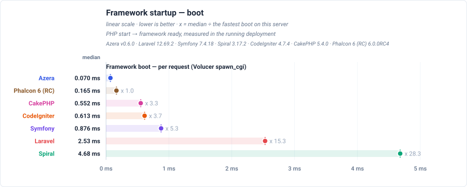
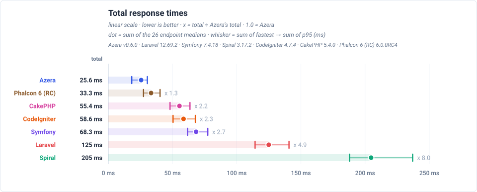
Feature benchmarks
GET /api/routing/1 — matches a typed route and dispatches it to a constant handler — no template and no database access — so the band measures route matching and dispatch and nothing else. The endpoint sits in a deep bucket of the route table, which is where a compiled index actually saves work. `/echo` is drawn beside it: the same constant handler behind a STATIC route, i.e. the floor that route matching is measured against — and, like any floor, it is mostly the SERVER rather than the framework. Measured 2026-11-24 with `temp/echo-ab.php` on the bench VM, the entire framework layer on `/echo` costs single-digit microseconds, inside rows that print two to three orders of magnitude more. A difference of a few microseconds there is below the run-to-run spread, so read `/echo` as the common floor and NOT as a comparison between entrants; the charts that separate frameworks are the ones with real work in them.
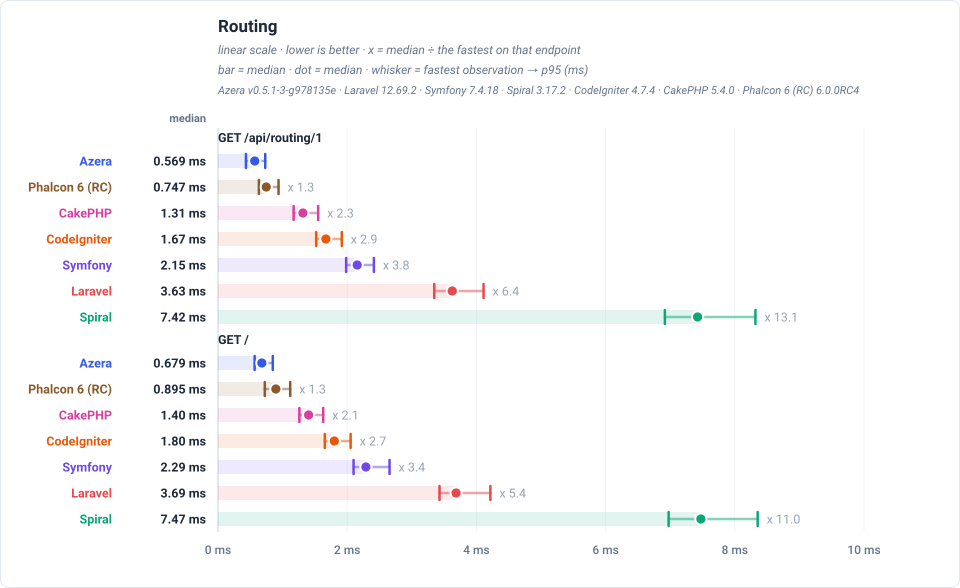
GET /items — loads one page of the 1,000 seeded rows through each framework's ORM / Active Record layer: 20 items plus a COUNT for the pagination total. The `-fast` band repeats that page with hydration switched off, so the cost of building one object per row can be read directly instead of inferred.
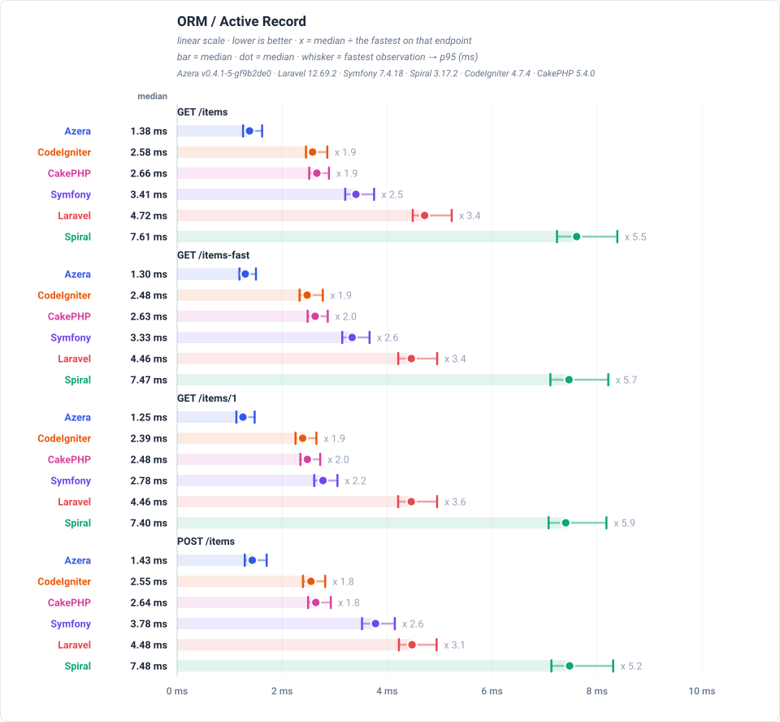
GET /items-qb — builds the same page of 20 items with each framework's query builder instead of its ORM, so the two data-access styles can be compared directly.
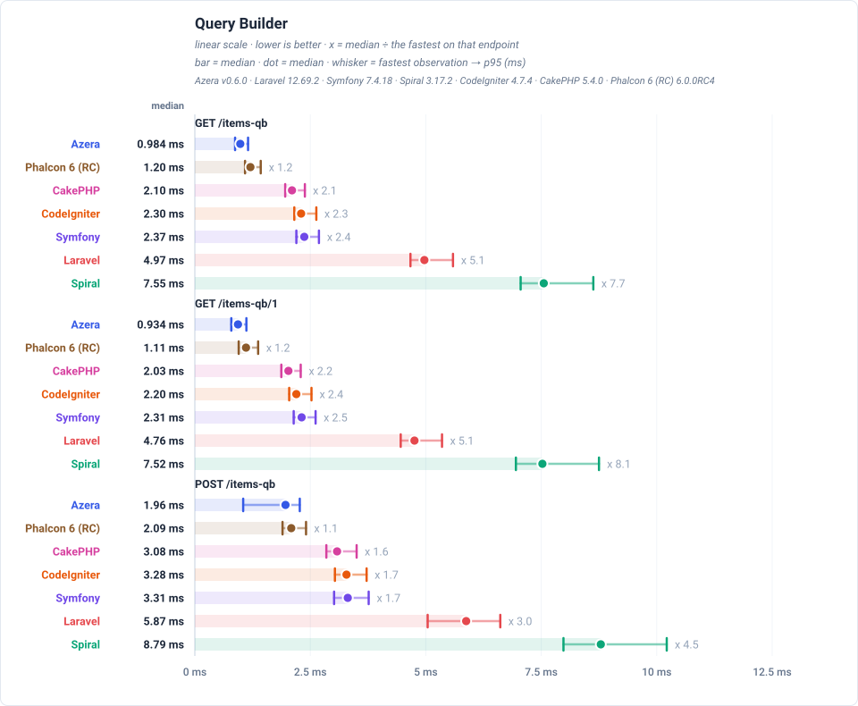
GET /api/items — serves the same page of items as a JSON response rather than HTML, which adds serialization to the ORM work. The `-fast` band repeats that response with hydration switched off, so serialization cost and hydration cost can be told apart.
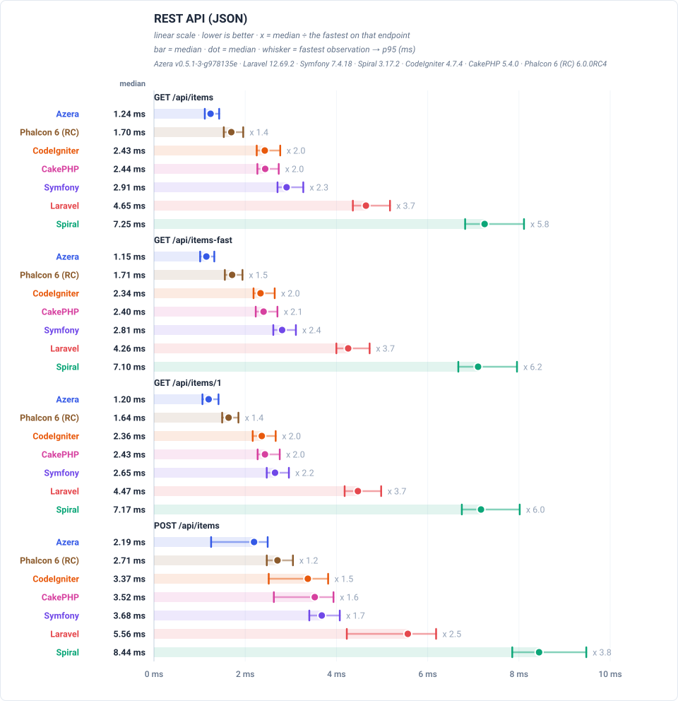
GET /features/aop — runs a request through interceptor machinery — logging, retry and transaction advice wrapped around the handler. The entrants split into two styles, and this row means different work on each side. TRANSPARENT interception — advice declared on the method and applied by generated code, handler body untouched — is what Azera does (`#[Advised]`, `#[Transactional]`, `#[Cache]`, `#[Log]`, `#[Retry]`). DIRECT interception — the pipeline written out in the code — is what everyone else does: Laravel composes an Illuminate Pipeline and Symfony chains invokable interceptor classes, both documenting that they have no proxy-based AOP; Spiral builds a `PipelineBuilder` pipeline; CodeIgniter, CakePHP and Phalcon have no interceptor layer at all and write the transactional insert by hand. Do NOT read the ranking across styles as a speed verdict: the two sides pay for different machinery, and the same caution applies to `cache`, `log` and `retry`, which on Azera also route through generated proxies while every other entrant implements them plainly. `GET /features/aop-direct` is the control: the identical insert with the transaction written by hand, served by every entrant, so the pair prices the abstraction on the same work. Phalcon sits the aop race out; it competes in logging, retry and pipeline.
Read this row in two styles — transparent: Azera; direct: Laravel, Symfony, Spiral, CodeIgniter, CakePHP. The cross-style ranking is not a speed verdict. GET /features/aop-direct is the control: the identical insert with the transaction written by hand, so the gap between that row and this one is what interception actually costs.
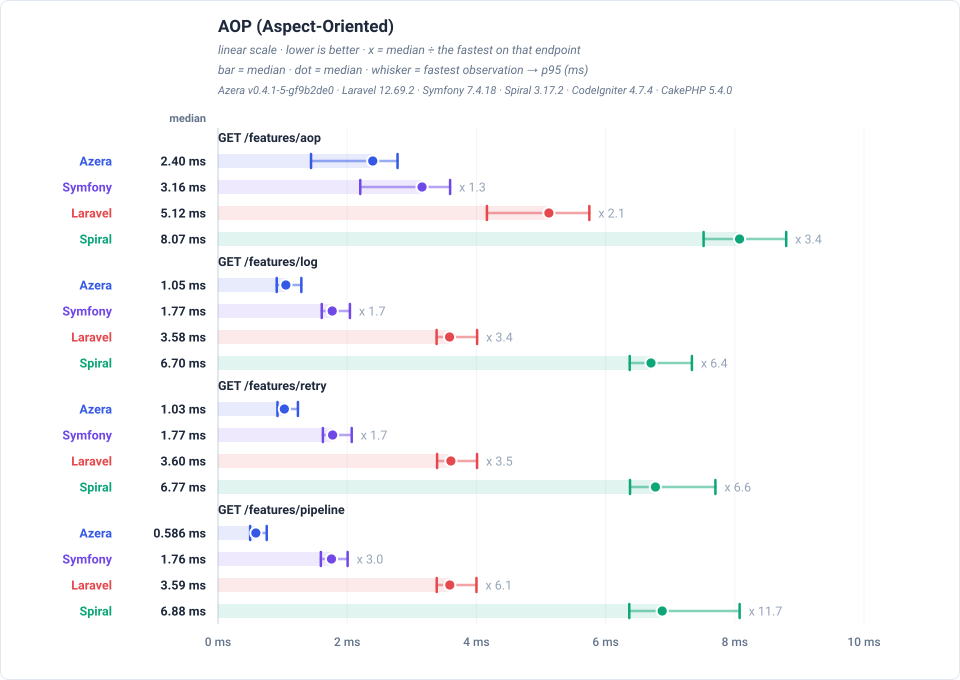
GET /features/log — logs a method entry and exit through the framework's own logger — PSR-3 everywhere. On Azera the call goes through a generated `#[Log]` proxy, so this row includes interception cost the other entrants do not pay here.
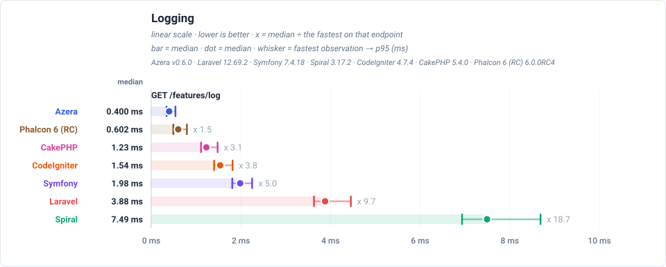
GET /features/retry — runs a deliberately flaky operation through a retry policy of up to three attempts — an explicit loop or interceptor everywhere, and on Azera a generated `#[Retry]` proxy, so this row includes interception cost the others do not pay here.
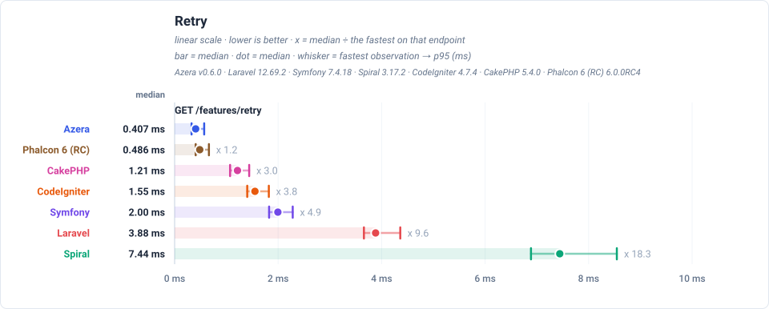
GET /features/pipeline — composes the handler with explicit interceptor steps — no proxy generation, so this row separates "the pipeline mechanism" from "the advice declaration mechanism".
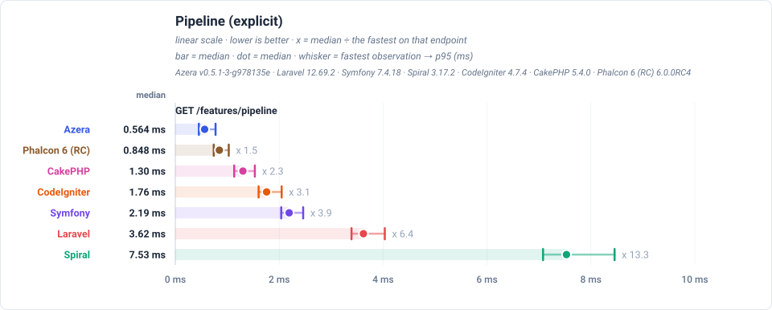
GET /features/cache — reads a COUNT(*) over the 1,000 rows through the framework's cache with a 10-second TTL, so a hit costs no database work and a miss runs the query. On Azera the read goes through a generated `#[Cache]` proxy, so this row includes interception cost the other entrants do not pay here.
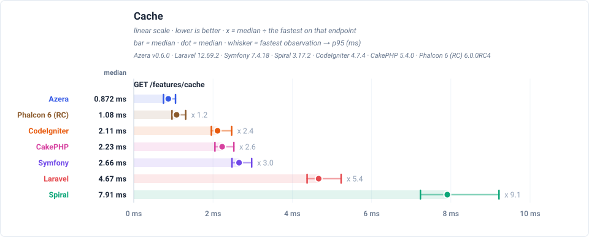
GET /features/db-events — inserts one event row per request and lets the framework's database events fire around that write. On Azera the insert goes through a generated `#[Transactional]` proxy, so this row includes interception cost the other entrants do not pay here.
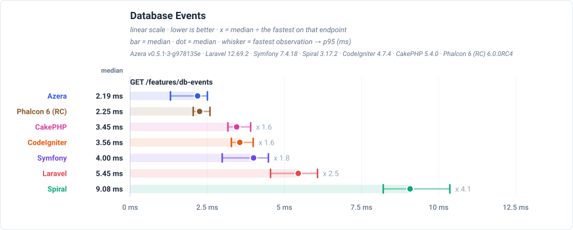
GET /features/events — dispatches an in-process event to registered listeners. On Azera the item it writes goes through a generated `#[Transactional]` proxy, so this row includes interception cost the other entrants do not pay here.
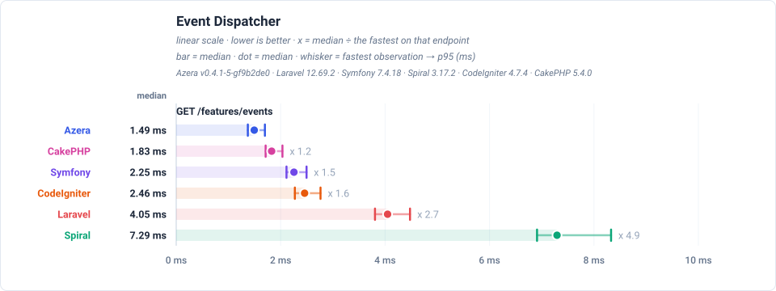
GET /features/validation — validates a payload with the framework's own validator.
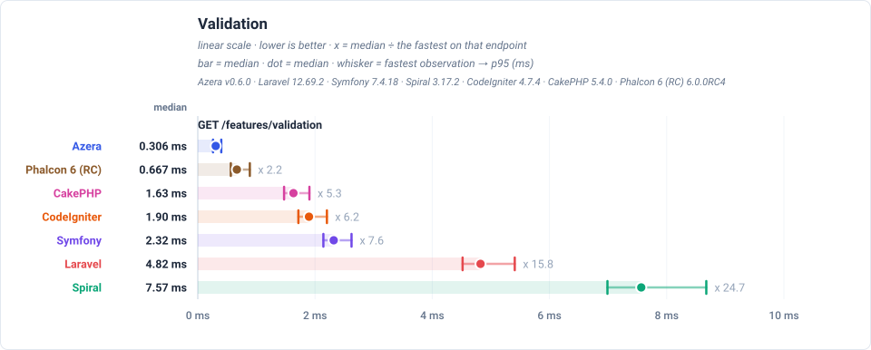
GET /features/config — resolves a value from the framework's config repository.
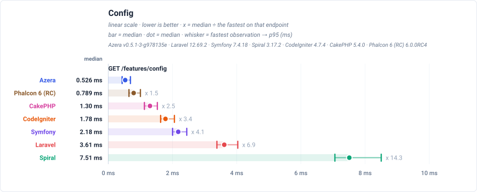
GET /features/request-scoped — resolves a service scoped to the request from the container.
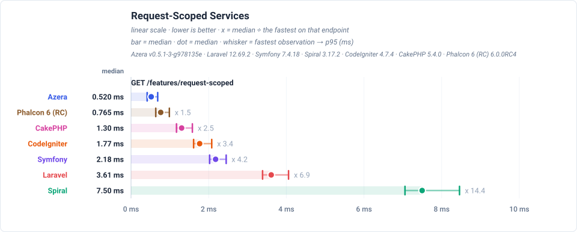
GET /features/rate-limit — checks a cache-backed rate limiter, which has long since denied the caller.
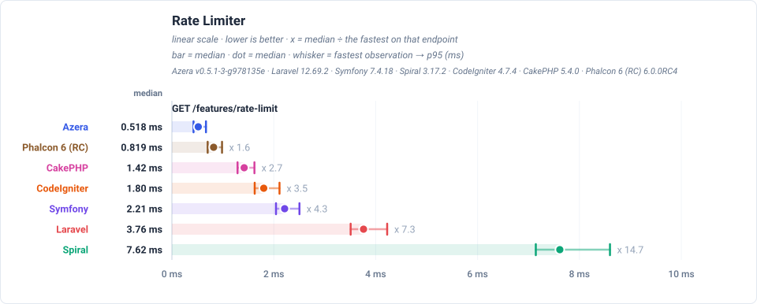
Latency by endpoint (ms, trimmed mean — lower is better)
| Request | Workload | Azera | Laravel | Symfony | Spiral | CodeIgniter | CakePHP | Phalcon 6 (RC) |
|---|---|---|---|---|---|---|---|---|
GET /api/routing/1 | no DB — typed route + constant body (routing only) | 0.330 | 4.21 | 1.98 | 7.25 | 1.52 | 1.27 | 0.528 |
GET / | no DB — routing + template only | 0.433 | 4.00 | 2.16 | 7.35 | 1.65 | 1.34 | 0.614 |
GET /echo | no DB — static route, constant body (throughput floor) | 0.289 | 3.84 | 1.90 | 7.23 | 1.49 | 1.20 | 0.519 |
GET /items | 20 of 1000 items (page 1, + COUNT) | 1.21 | 5.48 | 3.41 | 8.05 | 2.47 | 2.71 | 1.86 |
GET /items-fast | 20 of 1000 items (page 1, + COUNT), hydrated rows not built | 1.10 | 5.22 | 3.30 | 7.93 | 2.37 | 2.65 | 1.83 |
GET /items/1 | 1 item by id | 1.08 | 5.15 | 2.75 | 7.88 | 2.30 | 2.53 | 1.58 |
POST /items | 1 row upserted (sentinel #999999) | 2.20 | 6.38 | 3.80 | 9.17 | 3.38 | 3.67 | 2.69 |
GET /items-qb | 20 of 1000 items (page 1, + COUNT) | 1.00 | 5.05 | 2.41 | 7.68 | 2.34 | 2.14 | 1.23 |
GET /items-qb/1 | 1 item by id | 0.951 | 4.84 | 2.35 | 7.66 | 2.24 | 2.06 | 1.14 |
POST /items-qb | 1 row upserted (sentinel #999997) | 1.99 | 5.97 | 3.36 | 8.93 | 3.33 | 3.13 | 2.12 |
GET /api/items | 20 of 1000 items as JSON | 0.987 | 5.32 | 2.75 | 7.44 | 2.26 | 2.39 | 1.48 |
GET /api/items-fast | 20 of 1000 items as JSON, rows not hydrated | 0.896 | 4.88 | 2.66 | 7.36 | 2.17 | 2.35 | 1.51 |
GET /api/items/1 | 1 item by id as JSON | 0.951 | 5.09 | 2.51 | 7.52 | 2.20 | 2.40 | 1.45 |
POST /api/items | 1 row upserted (sentinel #999998) | 1.90 | 5.87 | 3.55 | 8.92 | 3.23 | 3.49 | 2.50 |
GET /features/aop | 1 row upserted (sentinel #888800) | 1.92 | 5.46 | 3.14 | 9.26 | 3.25 | 2.77 | — |
GET /features/aop-direct | 1 row upserted (sentinel #888800) | 1.82 | 5.44 | 3.12 | 9.08 | 3.28 | 2.77 | — |
GET /features/cache | COUNT(*) of 1000 rows, cached 10s (miss = query) | 0.890 | 4.73 | 2.70 | 8.08 | 2.15 | 2.27 | 1.11 |
GET /features/log | no DB — buffered log handlers | 0.417 | 3.95 | 2.02 | 7.65 | 1.57 | 1.26 | 0.623 |
GET /features/retry | no DB — retry policy | 0.420 | 3.94 | 2.03 | 7.58 | 1.58 | 1.24 | 0.506 |
GET /features/pipeline | no DB — middleware pipeline | 0.320 | 3.94 | 2.03 | 7.55 | 1.58 | 1.23 | 0.627 |
GET /features/db-events | 1 row upserted (sentinel #888800) + COUNT(*), events collected | 1.88 | 5.77 | 3.88 | 9.18 | 3.32 | 3.38 | 2.01 |
GET /features/events | no DB — in-process listeners | 1.89 | 5.48 | 3.18 | 8.89 | 3.31 | 2.70 | 1.94 |
GET /features/validation | no DB — validator run | 0.319 | 4.89 | 2.36 | 7.71 | 1.94 | 1.66 | 0.690 |
GET /features/config | no DB — config lookup | 0.284 | 3.95 | 2.02 | 7.61 | 1.58 | 1.22 | 0.558 |
GET /features/request-scoped | no DB — scoped service resolve | 0.290 | 3.93 | 2.00 | 7.73 | 1.58 | 1.22 | 0.526 |
GET /features/rate-limit | no DB — cache-backed limiter | 0.307 | 4.09 | 2.04 | 7.80 | 1.58 | 1.35 | 0.593 |
Server floor — real nginx + PHP-FPM with pm.max_requests=0: the pool never recycles its worker, so no process is spawned per request — what remains is the FastCGI handshake plus a minimal script. A hello-world endpoint that boots nothing but PHP (floor-php) and a static file through nginx (floor-http) measure exactly that cost — the floor every row stands on. Subtracting that floor leaves the framework's own per-request boot, which FPM still pays for every request even though its worker survives.